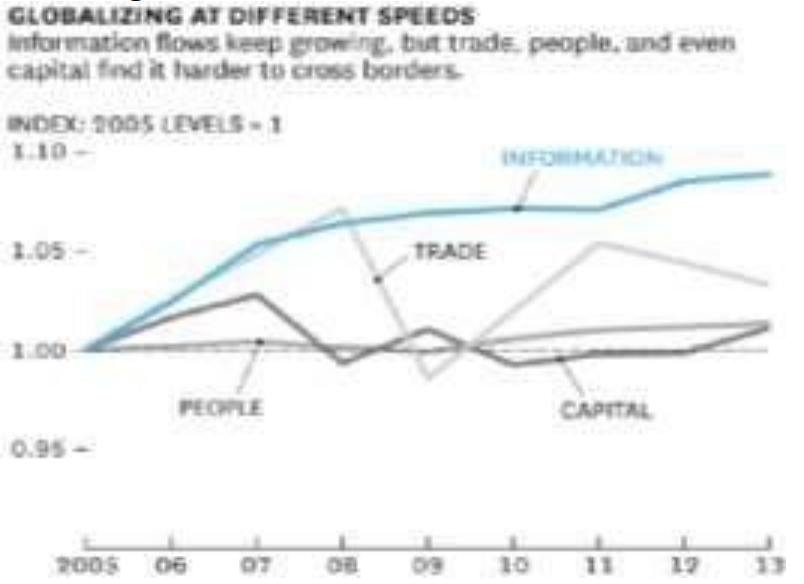

Introducción
El preámbulo de la virtualización hace énfasis y
se usa ampliamente en el marco de nuevas
tecnologías (TIC) se aplica el manejo de
programas actuales, que se desarrolla de manera
estratégica, el cual se tiene como interés de
integrar y compartir los nuevos recursos, con
esto se logra que nuevas generaciones se
interesen por el desarrollo de nuevas tecnologías
y se incentiva la utilización de nuevos servicios.
Con la propagación de las amplia
comunicaciones de la información y los nuevos
avances que se ha generado para el campo de la tecnologías, que se adquiere con el (programas),
que ha derivado que nuevas compañías
busquen como estrategia comercial la enorme
labor que es de explotar las estrategias de
originalidad que en cada campo que se maneja la
innovación tecnológica, para poder así lograr una
comunicación adecuada entre la comunidad
empresarial, se agiliza las nuevas formas de
invertir y dar a sus empleados, dando la
oportunidad de entrar, aquella información
clasificada e estructurada que se necesita en
beneficio de dar nuevos avances a aquellos
desafíos que se generan comúnmente.
En la actualidad las organizaciones han optado
por la implementación de nuevas tecnologías
mediante software y hardware para mecanizar al
máximo los procesos de negocio, el
mejoramiento de la interacción empresarial, y
además buscan que los empleados puedan
acceder a la infraestructura y la información para
dar los resultados a los desafíos que se presenten
en la empresa.
Así mismo la virtualización ha generado un gran
aporte tecnológico y eficaz a nivel mundial a las
empresas, ayudando a ser más eficientes de
forma inmediata y oportuna por lo cual sean
reducidos costos reflejando mayores.
Metodología
El método utilizado para la elaboración de este
artículo fue descriptivo, donde se describieron 20
artículos resultados de investigación. Para el
desarrollo de esta temática se emplearon fuentes
tales como; artículos científicos e investigaciones,
principalmente de bases de datos como Google
académico, Dialnet, Redalyc, smantic scholar
encontrando así definiciones y factores
fundamentales claves para un análisis sobre la
información.
La Virtualización
Como lo expresa Arias (2008) la definición de
virtualización surge con la noción de hacer mejor
la utilización de elementos tecnológicos por
medio de un conjunto de los mismos que tienen la
posibilidad de llegar a comunicar con diferentes
personas alrededor del mundo.
Es decir, los elementos tecnológicos
consiguen integrar funciones en cuanto a los
servicios de alojamiento y operaciones mediante
la implementación del internet.
Por lo tanto, mediante la virtualización los
elementos tienen la posibilidad de ser localizados
fluidamente por medio de aplicaciones y
procedimientos de una organización.
En lo que comenta (Russo, 2007) la palabra
virtualización puede emplearse a niveles de
gadgets de red y también a niveles de programa.
Cabe resaltar que todo esto es mediante los
servidores de procesamiento y alojamiento de
toda la información donde se consigue encaminar en más grande relación al provecho en la
minimización de costos en cuanto a lo que se
refiere a componentes tecnológicos.
Así mismo (Alaroe, 2012) afirma que es un
concepto que abarca un sistema que por medio de
la internet y ofrece servicios donde los usuarios se
les permite ingresar de forma gratuita o de
pagando, esto dependiendo del servicio que
necesite.
De la misma manera (Paniagua, 2006) sugiere
que la virtualización solventa eficazmente dos
inconvenientes en cuanto a la motivación de la
organización relacionados con las tecnologías de
información, tales como a entender y comunicar
elementos sin necesidad de hacer sometimiento y
así determinar reglas que decreten la repartición
del requerimiento compartido. Es por esto que
facilita y fortalezca el plan de información, de esta
forma intensificar el manejo de sus elementos.
Cabe resaltar que en un método virtualizado de
información hay ciertos elementos especiales que
se localizan en las aplicaciones.
Cabe resaltar la importancia de buscar que más
empresas que no hacen uso de la virtualización, se
integren a la innovación, que les brinda
beneficios económicos; ya que la información se
maneja desde una plataforma virtual, con esto se
busca concentrar la carga laboral en una sola
maquina con amplia capacidad de
almacenamiento.
¿Llevar a cabo un plan de virtualización no va
a ser muy caro?,
Se puede decir que podría verse de esta forma,
no obstante, con el pasar de los años el adquirir
dicho servicio, genera un incremento en los
costos, pero es un beneficio que trae la
implementación, ya que su objetivo es guardar
información clasificada, además se produce el
ahorro de costos en los empleados y asimismo la
administración de la virtualización: no requiere de
la implementación de mucho personal y reduce
los costos. Sin embargo, las empresas
anteriormente gastaban más dinero en la
contratación del personal y en la estructura, que
esta acarreaba que los costos aumentasen, con la
virtualización se proyecta de manera más
eficiente para el empleador.
Es de destacar que innovación tecnológica se
ha logrado desempeñar como el centro de accesibilidad en la evolución de las empresas y
aumentar los negocios.
Por lo tanto (Velázquez, 2009), afirma que la
virtualización aporta numerosas oportunidades
para las empresas, por otra parte minimiza costos,
poco tiempo de respuesta, ahorro de espacios
físicos, y reducción en el consumo de la energía.
Por otra parte la implementación de la
virtualización en otros doctrinantes; según
(Méndez y otros, 2006) menciona que el uso de
las TIC ha mejorado las relaciones con los
usuarios y los suministradores. (Portillo, 2016)
comenta que las (TIC) han permitido la
construcción de nuevos modelos de negocios en
el inicio del siglo pasado; en la modernidad hay
una inclinación a la digitalización de la compañía
gracias a la revolución de las TIC
¿Por qué virtualizar?
Son numerosos los efectos que tienen la
posibilidad de brindar el beneficio a diferentes
organizaciones que buscan un método más
confiable, rápido y útil en el mercado, extraer el
provecho que genera la virtualización, por
consiguiente la utilización es efectiva para
innovación que pide la nueva expansión
tecnológica.
Uno de los principales enlaces de la
virtualización se refiere a:
Los Clusters
Como lo expresa (Porter, 1999) que el término
de cluster tiene relación al grupo de compañías
que se encuentran agrupadas en un espacio
geográfico, que forman parte de una industria en
un determinado campo, que entre ellas se
desarrollan relaciones de fortalecimiento del
mercado y se genera también la rivalidad, lo
beneficioso que tienen de este tipo de relaciones
es que se complementan con compañías y forman
nexos con entidades financieras e instituciones
del públicas, corporaciones, instituciones de alta
calidad como las universidades, gremios y
asociaciones e industriales ya sean públicas o
privadas.
Así mismo (Navarrete, Montoya y Montoya
,2009) afirma que de la implementación de los
negocios que se realizan por vía electrónica, por
diferentes compañías que comparten la idea del “cluster”. Los estudios que se han realizado están
dirigidos a las diferentes industrias italianas que
resaltan. Las pequeñas empresas como las PYME
hacen lo posible por manejar la plataforma de las
TIC, logrando así la incrementación del uso de
negocios electrónicos y llegando a tal punto de la
autorización de la firma electrónica en dichas
transacciones; avanzando en la
internacionalización. El correo se ha desarrollado
como el producto más comercializado para las
organizaciones que comparten la idea del cluster
en las actividades comerciales.
La tecnología cloud computing
Como lo explica (Chispana, 2012) los
adelantos tecnológicos completados en el
presente siglo son tan extensos, que las compañías
tienen que estar al tanto de ellos para lograr
adaptarlos a las pretensiones que surjan de parte
de ellos y de sus clientes; además, el cliente
obtiene beneficios de manera directa de ellos, con
nuevos o mejorados programa de libre ingreso,
uno de estos adelantos es la tecnología Cloud
Computing.
Definición cloud computing
En lo que comenta Chispana (2012) hace
referencia a que el Cloud Computing, es un nuevo
modelo creado que presta el servicio de negocios
en la innovación de la tecnología que facilita al
cliente tener unas utilidades en la expansión de la
era de las TIC, que favorece tener los contenidos
o información en determinadas plataformas de
forma más eficiente en internet, así mismo se
ajusta a la administración de las nuevas
compañías siendo esta instantánea, trasparente
ajustándose a los diferentes tipos de personal
especializado en la temática, la adquisición del
servicio en la nube es de fácil uso para las
compañías y relacionarse con nuevas ofertas en el
mercado y se paga un costo por el consumo.
Por lo tanto según Chispana (2012) la
tecnología Cloud Computing se constituye de tres
primordiales capas y cada una cubre superficies
diferentes de servicios y productos de las
empresas:
- Programa as a Service (SaaS): El Programa
como Servicio es la cubierta más alta, radica en la
distribución de apps terminadas como servicio por medio de Internet, los suministradores de este
sistema tienen instalada la aplicación en sus
servidores propios. Ejemplos: Google
Aplicaciones y Office 365.
- Platform as a Service (PaaS): La Interfaz
como Servicio facilita virtualizar los servidores
de una compañía para proveer todas las
pretensiones de las App desarrolladas, esto quiere
decir que contratan suministradores que dan
máquinas virtuales en sus centros de cálculo [2].
Ejemplo: Windows Asure, Amazon.
- Infraestructure as a Service (IaaS): La
Infraestructura como Servicio tiene relación a las
considerables habilidades de alojamiento masivo
de información, los usuarios compran los
elementos como un servicio de afuera.
Los suministradores cobran los servicios de
acuerdo con la base establecida y por la
proporción de elementos consumidos. Ejemplo:
Amazon.
¿Qué posibilidad tienen las compañías ser más
competitivas en ámbitos de todo el mundo?
(Castro, 2009) afirma que los directivos de las
organizaciones no únicamente tienen que elegir
cual es la estrategia que va a generar impacto en
el mercado y que sea la más correcta, además se
debe innovar estar en la competitividad de
empresas de todo el mundo. Sobre la estrategia
de entrada más correcta, sino además acerca de
cómo hallar virtudes competitivas en mercados de
todo el mundo.
En lo que comenta Drucker (1970) La
originalidad de los hombres de negocios va a ser
de tanta consideración para la gestión como la
funcionalidad administrativa, tanto en los países
desarrollados como en los que están
desarrollándose. Las TICS Tienen una diversidad
de apps que facilitan en la contribución para que
las negociaciones sean más eficaces.
Por otro lado (Rodríguez, 2014) recomienda la
implementación de tecnologías que son
definitivas para hacer mejor el desarrollo, y la
implementación de recursos
Por lo tanto se ha presentado lo siguiente:
Retos y oportunidades para las empresas
Como lo expresan (Camarinha- Matos y
Afsarmanesh, 2003) que al fin y al cabo la
participación en la red virtual facilita que las
pequeñas y medianas compañías consigan las
mismas virtudes que aquellas organizaciones con
su más grande tamaño, pero sin abandonar su
especialización.
Como lo expresa (García y Pompa, 2017) se
generarán enormes cambios de los próximos años.
Lo previo dio a conocer que la virtualización
transporta a achicar los costos en espacios,
consumo de energía. Además, tiene como
elemento sustancial la elasticidad del manejo de
la información, gracias a sus múltiples e
incontables virtudes. La virtualización es cada vez
más usada y su desarrollo es más grande, toda
compañía necesita de ser modifica en algún
desarrollo que requiera y utilizar las tecnologías
como la virtualización para lograr ser competitivo
en el mercado, de lo opuesto va a quedar en
desventaja y tenderá a la extinción de un mediano
a la larga.
Como lo expresa (Alierta, 2011) Elegir las TIC
correctas, es un desarrollo crítico dentro de las
organizaciones, puesto que sobredimensionar o
sub valorarlas supone costos y pérdidas de
oportunidades. En el manejo de TIC, hay que
tomar elecciones respecto a saber las apps más
apropiadas para mejorar el desarrollo de los
procesos empresariales y seleccionar el modelo
de administración que se ajuste a las propiedades
década compañía en especial. Además de esto, las
empresas requieren aptitud de administración de
tecnología para identificar qué contribuciones
llevadas a cabo por las TIC, son pertinentes en el
agrado de las pretensiones específica de la
organización.
Así mismo Martin (2000) expresa que la
globalización, la fuerte rivalidad y el desarrollo de
los trabajos de base intelectual, están provocando
presiones sobre las construcciones
organizacionales habituales, dejando en prueba la
necesidad de adaptar su cultura para la
utilización triunfadora de construcciones
organizacionales virtuales. Se expone de esta
forma un ámbito donde los antiguos paradigmas
de administración (liderazgo, elementos
humanos, valores y cultura organizacional) no
tienen la capacidad de ofrecer respuestas acordes
a los nuevos retos. El cambio y avance
tecnológico es la exclusiva constate en la configuración de las futuras organizaciones;
afectando tanto su composición, el ejercicio de
poder, la forma de organización del trabajo, el
accionar humano, los valores y finalmente su
cultura.
De la misma manera (López y sandulli, 2001)
expresan que se ha visto en las diferentes
compañías que forman parte de las cualidades
positivas del mercado digital, se enfoca en
determinar cuál va ser el modelo de negocio,
haciendo las diferentes identificaciones en cuanto
al contenido se trata, como se compone y se
gobierna. Teniendo en cuenta lo anteriormente
planteado, se debe tener en cuenta el propósito de
la compañía, el mercado al cual va dirigido el
producto, seguido de la estructura de la cadena de
valor, teniendo en cuenta la incrementación de
gastos para la realización del producto y el
potencial que se va extraer y obtener las
ganancias; incentivando en el consumo del
mercado, ofreciendo el sistema a los clientes y
suministradores.
Las compañías que quieren ingresar al
mercado de la competitividad deben hallar una
virtud que sea sostenible, por el medio de
utilización en cuanto al internet se debe tener
claridad en cuanto al punto que se utiliza en la
estrategias, que se logra de dos formas: la eficacia
operativa, es la realización de las en la
competencia, pero es que mejor sobre salga o
mediante estrategias que causen impacto en el
mercado y sea diferentes a las innovaciones que
plantean las demás empresas, esto genera la
incrementación del costo en el mercado.
Asimismo es el motivo por el cual las compañías
se tienen que proyectar y posicionarse en el
mercado, teniendo el acontecimiento de la
novedad en las tecnologías e implementadas en el
internet, que se pueden explorar las virtudes que
se han desarrollado o puede ofrecer el sistema ese
gran aporte.
Pues según (Joyanes y cuesta, 2010) expresan
que la carencia de adopción de modelos de todo
el mundo de calidad en la producción de
productos y servicios de programa se transforma
en la primordial debilidad de la industria local, ya
que no permite traspasar mercados nacionales e
de todo el mundo donde se pide como mínimo esa
garantía.
Según (Wong, 2013) en un informe intitulado
“Soho en la nube”, lo cataloga como un peligro y oportunidad de un nuevo modelo de la
informática que se planteara a continuación:
Intimidad que tienen los datos: El riesgo de
estos datos se incrementa cuando se almacenan en
la nube debido a que tienen la posibilidad de ser
jaqueada la cuenta desde la plataforma de
internet. Esto genera desconfianza ya que en
determinados territorios los Estados obligan con
sus legislaciones a las empresas tener la base de
datos dentro del territorio Nacional.
La estabilidad, es el requisito de seguridad
frente a las amenazas ajenas y la descomposición
de esa información determinada. Es de considerar
que el suministro del servicio se haga o realice
con trasparencia, la certeza y la ejecución del
sistema cuando se realice una auditoría a la
información depositada en la plataforma.
La licencia del manejo del programa. Es
factible analizar la estrategia de la innovación del
programa, teniendo en cuenta los derechos que
generan la creación e implementación en la nube.
Interoperabilidad. Es exacto que esté
garantizada la interoperabilidad entre todos los
servicios. SLA (Services Level Agreement). Es
exacto el cumplimiento de acuerdos a nivel de
servicio (SLA) antes de confiar a una compañía
las apps de la misma.
Por otro lado (Gandara y otros, 2007) expresan
que estamos pasando por un instante de cambios
en cuanto a la proyección de las organizaciones,
donde las TIC están impactando de manera
significativa. Las empresas que opten por el
cambio de renovación deben analizar tanto como
de los directivos como de los demás empleados
donde se genera una actualización total cultural.
Cabe resaltar que las apps que pertenecen al
cloud computing tienen que ser diseñadas donde
se consiga separar por una variedad de servidores.
Cabe resaltar que este tipo de tecnologías son
de suma importancia en los procesos
empresariales, es por ello que se hablara de qué
manera se pueden implementar en las
organizaciones tales como a:
Aplicaciones logísticas
La Real Academia De España define logística
como el “conjunto de medios y procedimientos
necesarios para realizar la organización de una
compañía, o de un servicio, principalmente de
distribución”.
Como lo expresa Chispana (2012), la
Consideración de logística en las compañías, es
un extenso sistema de gestión de abastecimiento
que lo comprende todo, desde la obtención de
materia prima (contacto con proveedores) hasta la
organización de los bienes elaborados al cliente.
La funcionalidad primordial de la logística es
“optimizar fletes, asegurarse que los productos
sean transportados de manera correcta, calcular
tiempos de espera y de descarga, manejo y control
de alojamiento, bajar los escenarios de inventario
y mejorar el desempeño de toda la cadena de
organización.
Pues según (Chispana, 2012) esta estrategia
contribuye a minimizar costos y ofrecer un
increíble servicio al cliente, todo lo mencionado a
costos razonables; da a las compañías poder
afianzar la cadena de abastecimiento,
permitiéndoles llevar las mercaderías
primordiales a un preciso lugar y en un instante
oportuno. Además, es servible en la gestión de
inventarios para maximizar provecho y reducir
costos, a toda la cadena proveedor-distribuidorconsumidor.
Cloud computing como apoyo a las
aplicaciones logísticas
Como lo expresa (chispana, 2012) todos los
días las compañías buscan ganar una extensa
participación de mercado e incrementar el número
de usuarios por medio del avance de novedosas
maneras de llevar a cabo negocios por medio de
utilidades tecnológicas que reduzcan costos y
permitan procesos más efectivos.
Según lo anterior La más grande contribución
de Cloud Computing radica en hacer un rastreo
virtual de toda la operación de transportación de
mercadería en algún punto geográfico, de hecho,
numerosas compañías están construyendo apps
para el manejo de ruta, mercadería y materiales,
la nube les facilita reducir tiempos y costos.
Es de resaltar para (chispana,2012) esta
innovación trae grandes beneficios a la hora de
realizar una logística empresarial, que admita
planear el modelo a proseguir de la organización
y virtualizar lo que tiene que ver con transporte,
distribución, almacenamiento, de una empresa
para poder acceder a más clientes y reducir costos.
La logística como fuente de valor añadido al
ecommerce
En lo que comentan (Budet y Pérez, 2018) los
avances tecnológicos y el comercio electrónico
están transformando la forma de vender y ofrecer
productos.
Pues según (Budet y Perez, 2018) La
consolidación y optimización del eCommerce se
apoya en asegurar la excelencia en la vivencia de
usuario, desde el desarrollo de adquisición hasta
la distribución final del producto o del servicio
solicitado.
En este sentido, (Budet y Perez, 2018) señalan
que la logística es un aspecto clave. La
penetración de Amazon en los hogares ha
sacudido poderosamente el ámbito competitivo.
Ha obligado a los enormes distribuidores (y
fabricantes) a ofrecer una respuesta que satisfaga
las novedosas expectativas de servicio de los
compradores, iniciando una rigurosa carrera para
controlar la cadena de valor y la vivencia del
cliente.
De la misma manera (Budet y Perez, 2018)
expresan que el eCommerce, por definición,
responde a las transferencias comerciales que
tienen lugar en internet por medio de páginas de
internet y apps para móviles (app) entre
suministradores, comerciantes, centros
comerciales y usuarios.
Cabe resaltar según (Budet y Perez, 2018), que
el avance tecnológico permitió la virtualización
de conceptos físicos como entre otras cosas los
centros comerciales, las listas de la adquisición y
la asistencia al cliente. En estos ámbitos virtuales
la logística como fuente de valor añadido al
eCommerce permite la adquisición
descentralizada tanto de servicios como de
productos entregados por medios electrónicos y/o
servicios logísticos.
De lo anterior se puede explicar un ejemplo
claro como lo es:
Amazon
Como lo expresa (Budet y Perez, 2018)
Amazon surgió con la intención de ser la librería
del planeta, con la obsesión de comprender los
hábitos de los clientes y sobresalir en la vivencia
de adquisición de los individuos para lograr
subsistir.
Muy próximamente se percató de que, además
de libros, podía vender alguna otra cosa. Una vez
llevaba un libro iba conociendo el cliente, ¿por
qué no explotar todas las sinergias y brindarle más
cosas? Y de esta manera es como Amazon
comenzó a ingresar categorías y más categorías en
su surtido, con un propósito claro a la larga.
En lo que comenta (Budet y Perez, 2018)
Amazon Tomaba elecciones que no parecían
lógicas, pero que en la actualidad le han supuesto
una virtud competitiva: Amazon comprendió que
sin el control de la cadena de suministro no podía
sobresalir en vivencia del cliente.
Como lo explican (Budet Y Pérez, 2018)
Amazon empleo las siguientes estrategias:
Primero, desarrolló una densa red de centros
de organización para poder mostrar su surtido
(concepto long tail) acortando plazos de
distribución.
istribución.
Luego, consiguió La logística como fuente de
valor añadido al eCommerce compañía Kiva para
hacer de manera automática estos centros,
progresando la calidad de pedidos al achicar
gastos operativos; y desarrolló algoritmos de
predicción de demanda y pricing.
Más adelante, reorganizó la cadena de
suministro y exploró novedosas maneras de
distribución para lograr ser útil el mismo día
(same-day-delivery) como servicio premium. En
los años anteriores, fue dando nuevos pasos hacia
la innovación: probando drones, construyendo
aparatos para hacer más simple la confección de
pedidos, haciendo más fuerte la red de forwarding
en todo el mundo (para vigilar toda la cadena de
suministro)
Finalmente, creando de a poco una flota
propia para complementar a los operadores
habituales. Amazon consigue dinero desde el
último cuatrimestre del año 2015 y su desarrollo
exponencial amenaza, y asusta, a los actores de
varios sectores; fundamentalmente, de la enorme
organización de todo el planeta. Se puede afirmar
que, dentro de la cadena de suministro, Amazon
se convirtió en la referencia.
Por lo tanto según (Budet y Perez, 2018) Es
evidente que el eCommerce cambió la logística
totalmente. De una logística central, con una
cantidad enorme de referencias y servicio en palés
transportados por camiones, se pasó a una
logística distribuida, con millones de referencias y servicio en cajas entregadas con furgonetas (o,
inclusive, motocicletas y bicicletas).
Así mismo (Budet Y Perez, 2018) expresan
que en este ámbito es tan sustancial el servicio
como las propiedades del producto: el
posicionamiento dentro de la cadena de
suministro y la distribución pasan a ser clave para
asegurar la disponibilidad de lo que quiere el
cliente en el instante que lo quiere y a un valor
competitivo.
Efecto de las tics en el enfoque a negocios
internacionales
En lo que comenta (Barragan, Codina y Vela,
2015) que para facilitar la vida de las personas y
los negocios tienen que estar enlazados las TICs
y el comercio internacional. Las transformaciones
en cuanto a los ámbitos económicos en todo el
mundo, las reformas del comercio mundial, los
inconvenientes microeconómicos de los países
entre otros, han impactado los negocios locales y
globales.
Las compañías de un país deben acoplarse a
los cambios tecnológicos en poco tiempo, en
concordancia de como progresan las contrapartes
en los diferentes territorios.
Como lo expresa (Laudon, 2012) relata que
actualmente los productos se mueven en
diferentes campos no solo en fronteras sino
además pasa por medio de procesos empleos entre
otras.
Por otro lado Si una compañía no posee un
sitio web, seguramente va a tener un desarrollo
retardado y caro. Anteriormente los usuarios
potenciales optaban a consultar por medio de las
páginas amarillas y así poder comprender el
negocio.
Cabe resaltar que el avance de las tecnologías
de información en los negocios ha llamado la
atención de estudiosos en los recientes años.
Como lo expresa (Lindh, 2003) señala que
algunos estudiosos comentan que las TIC facilitan
las relaciones entre diferentes países, y a su vez
otros comentan que estas generan disputas entre
países.
(Basu, Fernald y Shapiro, 2001) Las Tics
destacan en las compañías e industrias
competitivas, además para ser eficientes es
necesario la implementación de nuevas
tecnologías de información.
En lo que comentan (Deeter-Schmelz, Pires
and Aisbett, 2002), la tecnología actualizada
puede contribuir a que las organizaciones
alcancen un nivel alto de eficiencia mediante la
minimización en la realización de procesos dentro
de las empresas, incrementar el dialogo entre los
trabajadores, usuarios o suministradores. Las
compañías proponen novedosas opciones para el
avance o la optimización de las ocupaciones de
mercado. Cabe resaltar que los estudios
demostraron que las empresas que no incluyen en
sus procesos TIC presentan un desarrollo
retardado de eficacia.
De la misma manera (Baumol, 1967;
Nordhaus, 2006) señalan que el alza en cuanto a
costos incrementa el plazo de evaluación de
sectores del Producto Interno Bruto nominal, lo
que disminuye el desarrollo de la eficacia
nacional (Laudon, 2012), afirma que se tiene la
posibilidad de asegurar que el comercio en todo el
mundo vincula más a la gente y es por esto que
las compañias que incluyan tecnologías de
información tienen la posibilidad de llegar a ser
superiores.
Como lo expresa (Hernández, 2013) es
considerable que las compañías generen un
ámbito correcto para la administración de
negociaciones.
Figura 1. Globalización a diferentes velocidades

Fuente: (Zorrilla, 2014)
Según (Zorrilla, 2014) en esta grafica se
observa que la (internet, telefonía, y la
comunicación), fueron los de mayor impacto
generado en años anteriores, además se observa
un descenso y rehabilitación de los negocios en
todo el mundo durante la crisis presentada en el periodo de 2008 a 2009 y un diminuta
consecuencia frente a flujos de capital.
Así mismo (Stassi, 2017) afirma que la
digitalización de la información en conjunto con
el avance de las tecnologías de comunicación
facilita sentar las bases de este nuevo pensamiento
productivo (organización virtual), donde la
incorporación de la mecanización y la
comunicación han permitido que las máquinas
(robot) se logren transmitir entre sí y con el resto
de los gadgets usados por los trabajadores.
El dominio de las tic en la internacionalización
de las empresas
Como lo expresa (silva, 2018) la
implementación de las TIC han sido prioritarias
en cuanto a la globalización y al desarrollo de la
internacionalización de las compañías. Por otro
lado las tecnologías de información llevan a que
las empresas sean más eficaces y por ende más
productivas, lo que conlleva a que estas
incrementen su competitividad en mercados
nacionales e internacionales. Cabe resaltar que
estos métodos han ocasionado que las
organizaciones intensifiquen su desarrollo en el
ámbito internacional y recurran a manera de
inversión extranjera en diferentes aperturas como
lo es el offshoring, y el Joint Venture.
Como lo expresa (Reich, Benbassat, 2000) la
implementación de las TIC en las organizaciones
les brinda ventajas competitivas desde diferentes
puntos de vista a nivel mundial.
Por otro lado en la actualidad la utilización de
las TIC en los procesos de las empresas ayudan a
intensificar los métodos de internacionalización
comparado con hace dos décadas.
Cabe resaltar que al establecer una unión con
un colega en todo el mundo, acarrea un menor
compromiso debido a las TIC, por otro lado los
métodos de apertura de los distintos mercados
internacionales, las TIC han contribuido a la
reducción del compromiso permitido en la
sutileza de estos mercados, al poner en una
situación comprometedora pocos recursos a
través de los Joint Venture o a la incomprensión
del mercado a través de compras.
Resultados
Al pasar de los años, el progreso tecnológico y
las nuevas eras han llevado a la adaptación de
nuevas tecnologías como la virtualización
llegando a revolucionar el mundo, de acuerdo a la
implementación de la virtualización de los
recursos tiene retos y riesgos, según lo expresa
(Chalico, 2009) Algunos riegos pueden ser la
seguridad de la información, privacidad,
arquitectura de la empresa y control de
aplicaciones, los cuales pueden significar
iniciativas conflictivas y requerir cambios
culturales y logísticos importantes.
Comprender los objetivos de la
implementación: algunas cargas de trabajo están
menos preparadas para la virtualización que otras.
Según (Dawson, 2010) “No centrarse sólo en la
gestión de la carga de trabajo virtualizadas:
identificar las cargas de trabajo que deben
permanecer físicas y administrarlas en
consecuencia”
Según lo anterior (Arango, 2009) explica que
la virtualización también apoya el crecimiento por
demanda, la flexibilidad para aprovisionar nuevos
recursos a nuevas necesidades y facilita los de
innovación, ofreciendo la agilidad necesaria para
reaccionar rápidamente a cambios repentinos en
la organización para responder a las necesidades
del mercado. Como lo explica.
Discusión
En base al artículo se puede decir que la
virtualización ha sido y va hacer una de las
herramientas con mayor importancia para la
competitividad de las organizaciones, aunque a
este punto aun las empresas en sus procesos no las
han implementado como debe ser solo unos casos
de éxitos que han demostrado su factibilidad, la
virtualización sigue siendo una combinación
esencial de las TI, primero para la reducción de
los costos y optimización de los recursos; y
segundo para su utilización eficaz en los procesos
y satisfacer las necesidades que el mercado
requiere.
Partiendo de lo anterior, la virtualización y su
implementación en cada una de las diferentes
tecnologías que beneficien de manera global los
diferentes modelos de negocios y esta a su vez
tenga una positiva participación de posibilidades de inversión que atrapen a nuevos mercados; de
acuerdo con el autor (Chaves, 2008) “ De las
ventajas analizadas es importante hacer ver que
virtualizando, un usuario aprovecha su capacidad
de procesamiento de forma óptima, dando los
recursos a quien los necesita, en el momento más
adecuado”
Respecto a la relación que esta tiene con las
organizaciones donde incluyen tácticas
corporativas que faciliten a los diferentes ámbitos
internos, de acceder con facilidad a estas nuevas
tecnologías y material físico que por lo tanto se
verá reflejado en sus acciones al momento de
negociar, y participar en el mercado. Ya que la
virtualización requiere estar en constante
evolución para ser incluida en esta nueva era de la
digitalización.
Conclusiones
Toda organización requiere ser modificada en
cualquier proceso o transformación que se
requiera y con la ayuda del uso de las tecnologías
como la virtualización para lograr ser competitivo
en el mercado, de lo anterior se muestra la
importancia de la implementación de nuevas
tecnologías y las ventajas que genera a los
modelos de negocios.
Las Tecnologías de información son
primordialmente fundamentales en toda empresa
ya que virtualizando las proporcionan beneficios
para que estas sean más eficientes, eficaces en los
diferentes ámbitos y puedan tener acceso a una
mejor información y relevancia en las decisiones.
La Virtualización se sigue expandiendo a
través de las nuevas tecnologías y su
implementación en las diferentes áreas
empresariales esta a su vez contribuyen a la
reducción de costos, mejoras tecnológicas y mejor
participación en el mercado, ahora bien este es
buen factor diferenciador en los procesos de
negocio que ayudan a maximizar la inversión.
Las empresas siempre se han dispuesto a
encontrar el modo de reducir costos, primero
implementando con estrategias donde estas se
beneficien y adopten posturas positivas para las
nuevas llegadas de tecnología, donde se puede
apreciar que algunas empresas ya son top
mundiales por utilizar estas nuevas tecnologías y
aprovechar todos los beneficios que estas
conllevan.
La virtualización es cada vez más utilizada y
su crecimiento es mayor, toda empresa requiere
de ser modifica en algún proceso que requiera y
hacer uso de las tecnologías como la
virtualización para poder ser competitivo en el
mercado, de lo contrario quedará en desventaja y
tenderá a la extinción de un mediano a largo
plazo.
Referencias
- Aguilar Barrientos, S., Bustamante Z., L. F., &
Cano A., J. A. (2013). Uso y apropiación
de la tecnología de información y
comunicación: dos conceptos para la
negociación internacional en
organizaciones productivas. Revista EAN
ISSN 0120-8160 [online]. Pp. 56-69.
- AlaroCoarite, V. (2012). Tecnologías Cloud
Computing para el Modelado de
Negocios. Revista de información
tecnología y sociedad, 25-28.
- Arango Moreno, P. (2009). Impacto de la
virtualización de servidores para procesos
de negocio apoyados en TI. Recuperado
el 18 de octubre de 2019, de Proyecto de
Grado Ingeniería de Sistemas:
repository.eafit.edu.co › xmlui › bitstream
› ArangoMoreno_Paulina_2009
- Arias Chaves, M. (2008). Percepción general de
la virtualización de los recursos
informáticos. Recuperado el 30 de
septiembre de 2019, de InterSedes:
Revista de las Sedes:
https://www.redalyc.org/pdf/666/66615066011.pdf
- Barragán Codina, J., & Vela Quintero, J. (2015).
Impacto de las Tics en la Gestión de
Negocios Internacionales. Recuperado el
15 de octubre de 2019, de Universidad
Autónoma de Nuevo león:
www.spentamexico.org›A3.10(3)18-33.pdf
- Batalla, M. (2015). Impacto de las TIC en la
forma de hacer negocios internacionales:
una revisión del paradigma ecléctico.
IAES, 27.
- Budet Jofra, X., & Pérez Gómez, A. (mayo de
2018). La logística como fuente de valor
añadido al eCommerce. Recuperado el 7 de octubre de 2019, de Revista de
economía, empresa y sociedad:
http://oikonomics.uoc.edu/divulgacio/oikonomics/_recursos/documents/09/3_Budet-Perez1_Oikonomics_9_A4_cast.pdf
- Chipana Quispe, R. (2012). Cloud Computing
para Aplicaciones Logísticas.
Recuperado el 3 de octubre de 2019, de
Revista de Información Tecnología y
Sociedad:
https://www.academia.edu/13447196/Cloud_Computing_para_Aplicaciones_Log%C3%ADsticas
- Claudio, P. (2006). La virtualización de los
recursos tecnológicos, impulsor del
cambio en la empresa. Recuperado el 12
de octubre de 2019, de universidad
business review-actualidad económica:
http://www.redalyc.org/pdf/433/43301208.pdf
- García Campos, A., & Pompa Flores, Y. (2017).
Virtualización de los recursos de ti como
ventaja competitiva en las empresas.
Recuperado el 3 de octubre de 2019, de
https://www.realidadeconomica.umich.mx/index_files/virtualizacion_de_los_recursos_de_ti_6.pdf
- Ibagué Pinzón, S., Camacho Ávila, E., &
Espindola Diaz, J. (2012). Desarrollo y
Aplicacion de Cloud Computing en
Colombia. Recuperado el 9 de octubre de
2019, de Universidad Pedagógica y
Tecnológica de Colombia:
http://www.laccei.org/LACCEI2012-Panama/StudentPapers/SP007.pdf
- Joyanes Aguilar, L., Cuesta Meza, A., & López
Trujillo, M. (2010). Caracterización de la
industria del software en el Triángulo del
Café - Colombia. Entre Ciencia e
Ingeniería, 76 - 87.
- López Sánchez, J. I., & Sandulli, F. D. (2007).
Evolución de los modelos de negocios en
internet: SITUACIÓN ACTUAL EN
ESPAÑA DE LA ECONOMIA
DIGITAL. Economía Industrial, 213-
229.
- Navarrete Nossa, J., Montoya Restrepo, L., & &
Montoya Restrepo, I. (2009). Clusters
como un modelo en el desarrollo.
Recuperado el 6 de octubre de 2019, de
revista innovar. Vol. 19, No. 34: https://dialnet.unirioja.es/servlet/articulo?codigo=3198510
- Lugo Cardozo, N. (2014). Tecnologías de
virtualización en los sistemas
informáticos de las organizaciones
empresariales del estado zulia.
Recuperado el 15 de octubre de 2019, de
Revista Electrónica de Estudios
Telemáticos:
https://www.redalyc.org/articulo.oa?id=78431770004
- Luis Mathison, J., Primera, C., & García, L.
(2007). Efectos de las tic en las nuevas
estructuras organizativas: DE LA
GERENCIA VERTICAL A LA
EMPRESA HORIZONTAL. Revista
NEGOTIUM / Ciencias Gerenciales, 4-
29.
- Orozco, I., & Jacobs, O. (2015). La nueva era de
los negocios: computación en la nube.
Recuperado el 9 de octubre de 2019, de
Red de Revistas Científicas de América
Latina, el Caribe, España y Portugal:
https://www.redalyc.org/pdf/784/78457627005.pdf
- Pérez, J. (2011). Virtualización y Green IT.
Recuperado el 6 de octubre de 2019, de
Universidad Nacional de la plata, tesina
de licenciatura:
http://sedici.unlp.edu.ar/handle/10915/47004
- Soriano Pinar, I., Pelechano Barahona, E., &
García Muiña, F. E. (s.f.). La nueva
organización de la actividad empresarial:
LOS SISTEMAS PRODUCTIVOS
VIRTUALES. Recuperado el 18 de
octubre de 2019, de Universidad Rey
Juan Carlos:
https://dialnet.unirioja.es/servlet/articulo?codigo=2483111
- Stassi, H. (2017). Características de los procesos
de virtualización y su impacto en las
estructuras de las Organizaciones.
revistas.unc.edu.ar, 1-24.
- Stassi, H., Hoffman, G., & Suarez, T. (2015) Los
Procesos de Virtualización en las
Organizaciones y su Impacto en la
Cultura Organizacional. Recuperado el
12 de octubre de 2019, de
https://www.researchgate.net/publication/

 Especialista en gerencia de negocios
internacionales,
myriamlorenamu@ufps.edu.co.
Especialista en gerencia de negocios
internacionales,
myriamlorenamu@ufps.edu.co.  ORCID:
0000-0002-4014-2498.
Universidad Francisco de Paula Santander,
Cúcuta, Colombia.
ORCID:
0000-0002-4014-2498.
Universidad Francisco de Paula Santander,
Cúcuta, Colombia.